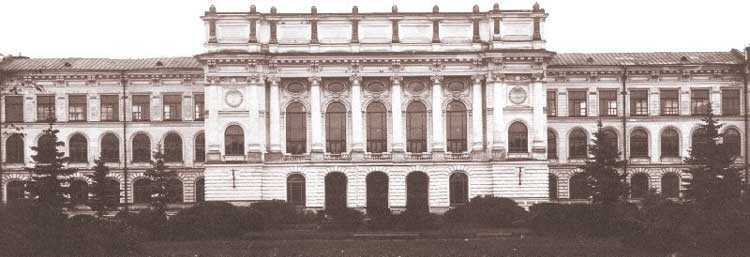

История ИСИ
Инженерно-строительный факультет: вчера, сегодня, завтра

В 2007 году исполнилось 100 лет со дня основания инженерно-строительного факультета в составе Политехнического института. За прошедшие годы многое менялось в организации учебного процесса, его задачах, принципах подготовки специалистов, менялись политические системы, названия факультета, от него отпочковывались отдельные структуры, которые впоследствии становились самостоятельными крупными организациями. Неизменным оставалось лишь одно - стремление готовить таких специалистов, в которых нуждалась страна.
Основными вехами на пути развития факультета можно считать те моменты, когда в соответствии с требованиями времени факультет менял свое название.
Гидротехнический факультет
Гидротехнический факультет помнят многие поколения политехников, которые обучались здесь инженерным основам строительства. После окончания Великой Отечественной войны страна нуждалась в большом количестве недорогой энергии. Строительство гидроэлектростанций стало важной частью восстановления народного хозяйства и повышения обороноспособности. Естественно, что для этого потребовалось большое количество квалифицированных инженеров, которые осуществляли проектирование объектов и непосредственное руководство строительством. Советская гидроэнергетика заняла одно из лидирующих мест в мире, как по масштабам строительства, так и по сложности возводимых объектов. Значительный вклад в этот процесс внесли выпускники и преподаватели нашего факультета.
Факультет носил название "Гидротехнический" с 1934 по 1999 год, с небольшим перерывом с 1945 по 1951 год, когда он назывался "Инженерно-строительным". Название "Гидротехнический" отвечало необходимости подготовки специалистов и проведения научно-исследовательских работ для укрепления энергетической базы Советского Союза за счет использования гидроэнергетических ресурсов. Особенностью этого периода развития является концентрация всех сил на решении одной четко поставленной задачи - строительстве гидроэлектрических станций. Естественно, что решение этой задачи требовало усилий специалистов в достаточно широком диапазоне научных направлений, таких как гидравлика, механика грунтов, строительные конструкции и т.д. и т.п. Факультет с честью справился с возложенной на него задачей. В настоящее время в России нет ГЭС, в обосновании, проектировании и строительстве которых не принимали бы участие выпускники Гидротехнического факультета. То же можно сказать о гидротехнических объектах в бывших республиках СССР, а ныне суверенных государствах. Многие выпускники участвовали в проектировании и строительстве объектов во Вьетнаме, Египте, Сирии, Турции и других странах.
Имена таких ученых, работавших в это время на факультете, как А.З. Басевич, А.В. Белов, П.И. Васильев, П.Д. Глебов, С.С. Галушкевич, О.Г. Дитц, Н.В. Зарубаев, П.Л. Иванов, Б.Д. Качановский, В.С. Кнороз, М.П. Кожевников, И.И. Леви, В.Е. Ляхницкий, А.Л. Можевитинов, А.А. Морозов, С.Д. Окороков, А.А. Сабанеев, Н.А. Филимонов, В.А. Флорин, Ю.И. Ягн, М.Д. Чертоусов, Р.Р. Чугаев, Д.С. Щавелев, известны далеко за пределами страны.
Профессорско-преподавательский состав ГТФ участвовал в обосновании таких крупных объектов, как проект переброски части стока сибирских и северных рек в Аральское море, комплекс сооружений для защиты г.Ленинграда от наводнений (КЗС) и др. Некоторые из них (проект переброски) не были доведены до стадии рабочего проектирования в результате политических дискуссий, другие (КЗС) выполняются с большим запозданием. Следует отметить, что позиции ученых ГТФ были подтверждены временем. Так, можно с уверенностью говорить о том, что качество воды в Финском заливе не будет снижено из-за строительства КЗС, это подтверждают результаты натурных исследований. Отказ от строительства канала переброски части стока северных рек на юг, по-видимому, принесет значительные экономические и политические убытки стране. Судя по данным независимых международных организаций, проблема дефицита пресной воды становится острее с каждым годом.
Инженерно-строительный факультет
В 1907 году по инициативе группы преподавателей и профессоров в Политехническом институте было открыто инженерно-строительное отделение, в 1918 году получившее статус факультета. В 1918 году Советское правительство начало перестройку российской высшей школы, которая продолжалась вплоть до самой Великой Отечественной войны. В эти годы факультет неоднократно объединялся с другими заведениями и неоднократно отделялся, при этом из него выделялись другие подразделения, на базе которых впоследствии были образованы новые институты. Название факультета менялось несколько раз. Так продолжалось до 1934 года, когда факультет был назван "Гидротехническим". С 1945 по 1951 год он снова стал "Инженерно-строительным". К этому названию вернулись в годы перестройки в 1999 году.
С началом перестройки существенно изменились направления подготовки специалистов и требования, предъявляемые к ним. Ввиду резкого сокращения количества строящихся ГЭС и других гидротехнических объектов, снизилась потребность в инженерах-гидротехниках. С другой стороны, в результате интенсификации жилищного и гражданского строительства резко повысилась потребность в специалистах в области охраны среды, городского хозяйства, управления водными ресурсами, недвижимостью и пр. Практические работы в этих направлениях велись на ГТФ и ранее. Так, академиком Ю.С. Васильевым еще в начале 70-х годов были организованы группы для разработки инженерных методов сохранения природных ресурсов и предотвращения загрязнения окружающей среды. Осуществлялась подготовка студентов в области жилищного строительства, хотя и не в достаточном объеме. Таким образом, переименование факультета явилось требованием времени.
Изменение названия, в сущности, констатировало тот факт, что направление гидротехника перестало быть основополагающим, так как появились новые востребованные временем направления научных исследований, подготовки кадров и опытно-конструкторских работ. Если раньше задачей высшей школы было обеспечение народного хозяйства квалифицированными кадрами, то теперь необходимо было обеспечить потребности населения в образовательных услугах. Таким образом, необходимо было ввести те специальности, которые были востребованы молодыми людьми.
Так появились новые выпускающие кафедры: "Технология, организация и экономика строительства", "Экологические основы природопользования", "Инженерное обеспечение городского хозяйства", "Строительство объектов туризма и спорта". Некоторые кафедры изменили названия и профиль подготовки. Кафедра "Использование водной энергии" стала называться "Возобновляющиеся источники энергии и гидроэнергетика", кафедра "Ядерные электрические станции" - "Энергетические и промышленно-гражданские сооружения", кафедра "Шельфовые и воднотранспортные сооружения" - "Морские и воднотранспортные сооружения".
Альхименко А.И. Инженерно-строительный факультет: вчера, сегодня, завтра (к столетию инженерно-строительного факультета СПбГПУ). / А.И. Альхименко // Санкт-Петербургский Вестник высшей школы. - Санкт-Петербург, 2007. - июнь. - с. 1-2, 7.
После реорганизации в 2013 году иженерно-строительный факультет переименован в инженерно-строительный институт. Руководит институтом с 2011 года доктор технических наук, профессор Ватин Николай Иванович.